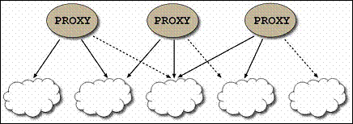
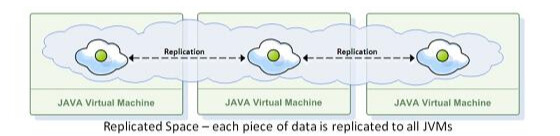
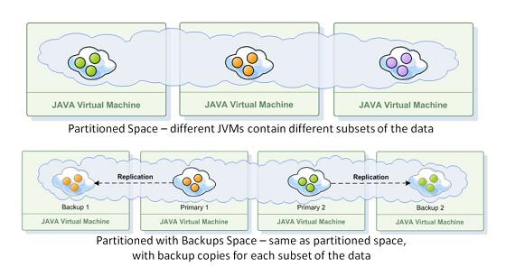

Data Partitioning (load balancing) is essential for any truly scalable architecture, as it enables scaling beyond the physical resources of a single-server machine.
It is optimal to spread large amounts of data across multiple JVMs (Java Virtual Machines) which can reside in several physical machines. We refer to several partitions related to the same schema as a Space.
This partitioning both allows scaling - the ability to grow when there is more data and simply enlarge your cluster by having more JVMs, and increased performance as a job can be run in several partitions simultaneously using resources and data of multiple processes.
Performing operations related to this Space (composed of multiple JVMs) is achieved via the GigaSpaces logical proxy which knows how to perform partitioning and data distribution. The proxy knows how to write every object to the correct partition and read from the correct location as well as perform any required action on the data. Due to this proxy, it is not necessary to know how the cluster itself is partitioned or how the data is distributed, in order to access it.
Load balancing (data partitioning) is essential in any truly scalable architecture, as it enables scaling beyond the physical resources of a single-server machine. In
A clustered proxy for a partitioned data grid holds logical references to all Space members in the cluster. The references are "logical", in the sense that no active connection to a space member is opened until it is needed. This is illustrated in the following diagram:

The space can have a single instance that runs on a single JVM, or multiple instances that run on multiple JVMs. When there are multiple instances, the spaces can be set up in one of several topologies. This architecture determines how the data is distributed across the JVMs.
Available topologies:
Replicated - data is copied to all of the JVMs in the cluster.
Partitioned - data is distributed across all of the JVMs, each containing a different data subset. A partition is a subset of data that is distributed by a routing key.
Partitioned with backup - data resides in a partition, and also in one backup space instances for this partition.


With a partitioned topology, data or operations on data are routed to one of several space instances (partitions). Each space instance holds a subset of the data, with no overlap. Business logic can be collocated within the partition to allow for fast parallel processing.
To learn more about applying data partitioning and load balancing, refer to the Data Partitioning page in the Developer Guide.
For relatively small tables which require colocated logic, you can avoid distribution of the data over partition and add replicated data using Broadcast Objects.